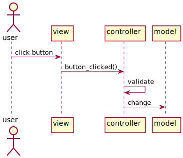
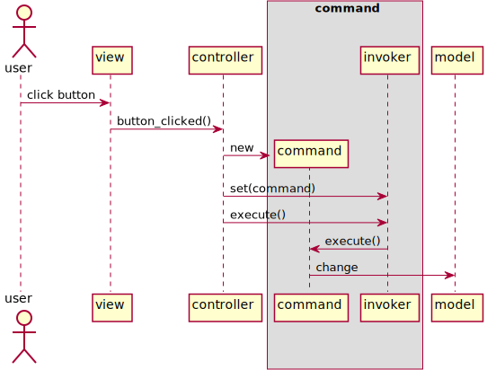
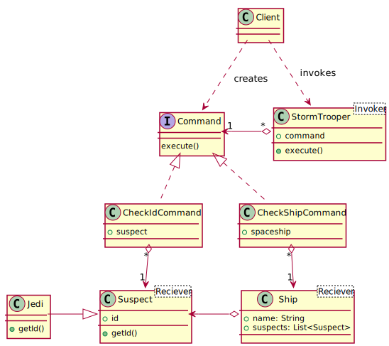
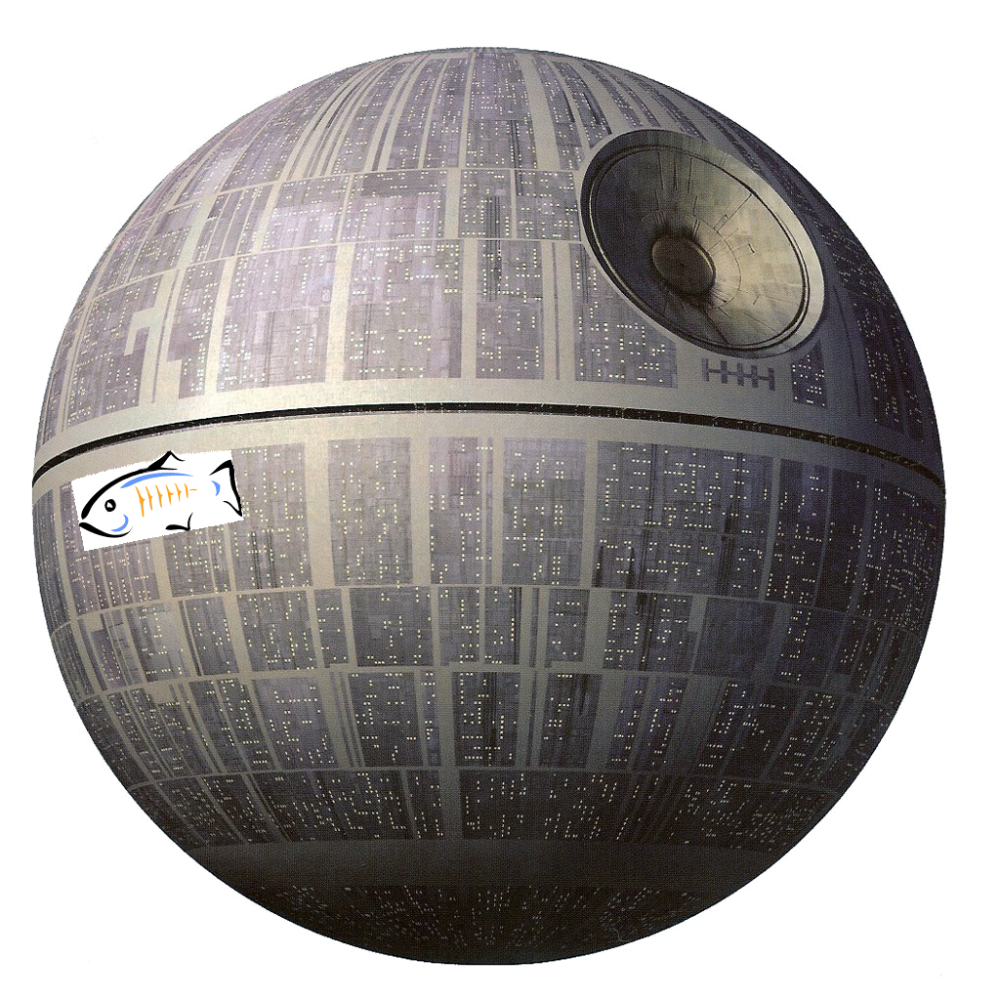
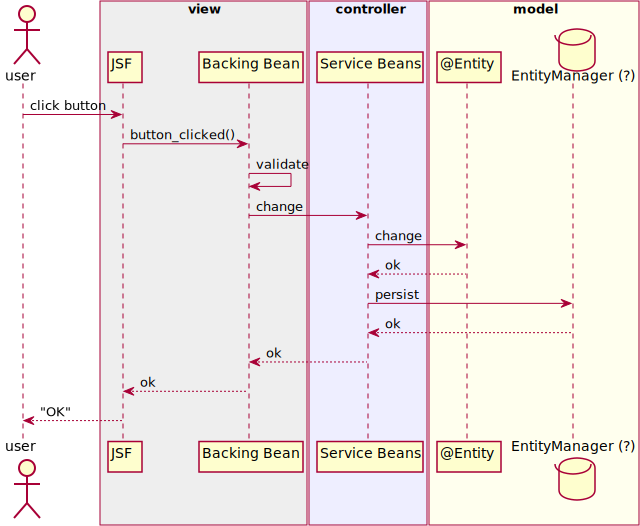
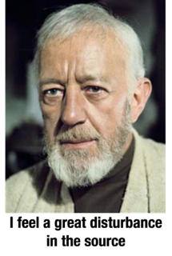
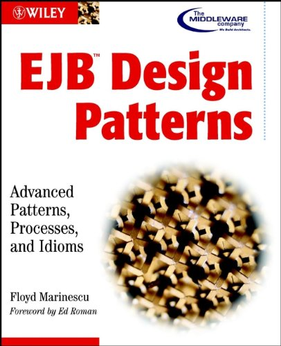
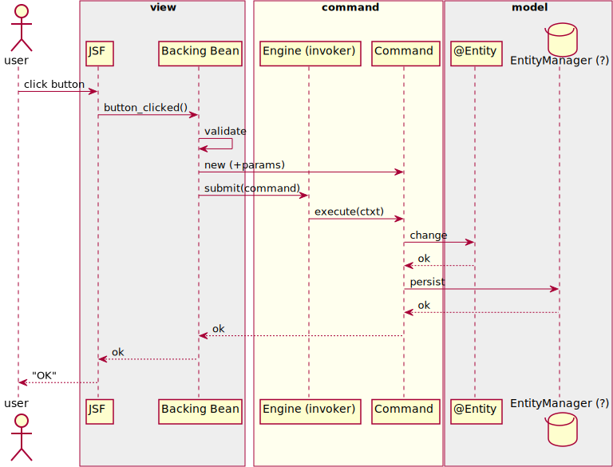
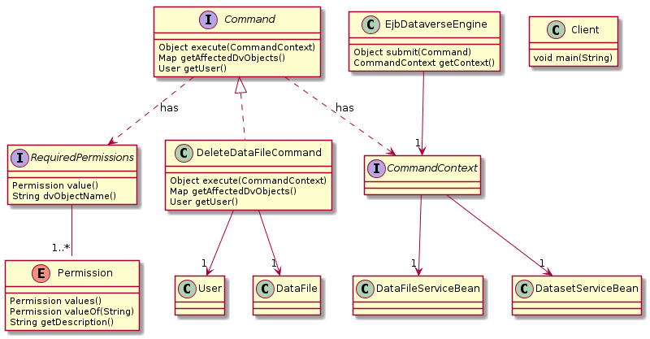

class: bottom # BOF5619 - Lean Beans (are made of this): Command pattern vs. MVC Michael Bar-Sinai ([@michbarsinai](https://twitter.com/michbarsinai)) http://www.iq.harvard.edu/people/michael-bar-sinai http://mbarsinai.com Philip Durbin ([@philipdurbin](https://twitter.com/philipdurbin)) http://www.iq.harvard.edu/people/philip-durbin http://greptilian.com .right[[](http://www.iq.harvard.edu)] ??? Hello! Thanks for coming. Let's get going. This is Birds Of A Feather 5619, "Lean Beans (are made of this): Command pattern vs. MVC." We are Michael Bar-Sinai and Philip Durbin, developers at the Institute for Quantitative Social Science at Harvard University. That's IQSS on GitHub and Twitter. --- class: bigfont # Agenda 1. Intro 2. MVC, Java EE MVC, Classic command 3. Command Adaptation for modern Java EE * With real-world examples! 4. The Lean Bean Design Pattern TODO * Should briefly summarize the benefit to Dataverse early in the talk (GUI and API use same commands, enforcing permissions with annotations on commands) before we define MVC, etc. .regularfont[ Slides and code: https://github.com/IQSS/javaone2014-bof5619 ] ??? Here's the agenda for this talk. First off, we come from academia but we're here to talk about how we applied the command pattern to a real-world application. It's called "Dataverse" and the installation at Harvard hosts the world's largest collection of social science datasets (about 749 thousand files across 54 thousand datasets). The code is on GitHub and there are a number of installations. First, we'll talk briefly about classic MVC, MVC in Java EE, and the classic command pattern. Then, we'll present the adjustments we've made to the command pattern to adapt it to Java EE, modern programming, and a permission system we came up with for Dataverse. Finally, we'll generalize the lessons learned and explain why we refer to the pattern as the "Lean Bean Design Pattern." This entire talk, including the code, has already been posted to GitHub. You should be able to find it under github.com/IQSS and you should feel free to open issues. --- # Classic MVC Goal: <strong>Separate data from its representation</strong> - Model: Business objects - View: What the users sees - Controller: Manipulates the model according to inputs from the view .center[  ] <!-- <img src="images/gof.png" width="300"/> <img src="images/hfdp.jpg" width="300"/> --> ??? In classic Model View Controller or "MVC": * the model consists of business objects, * the view is what the user sees * and the controller manipulates the model. MVC separates the user interactions from the data and facilitates code reuse. This pattern was developed by Trygve Reenskaug, while visiting Xerox PARC in '79 working on graphical user interfaces in SmallTalk. It's interesting to note that MVC is _not_ one of the Gang of Four patterns, though it is mentioned in that book, which we'll get to in a bit. The main benefit here is that the model can be viewed in many ways without cluttering it. There's a nice separation of concerns. In the web world, MVC has taken on a life of its own. More on this in a bit. (MVC for the web often differs significantly from the Smalltalk implementation. The Action-Domain-Responder pattern is "an attempt to refine MVC for a web-specific environment" according to https://github.com/pmjones/mvc-refinement .) --- # The Command Pattern .slide-badge[ <img src="images/gof.png" width="100"> ] Goal: <strong>Capture operations on the model as data</strong> .center[  ] ??? Presented in the classic GoF book, this pattern captures modifications to the model objects as data. A request is a first-class object. When a button is clicked, we see a command being instantiated and executed. There's an extra step, and extra layer of abstraction here. --- class: medfont # Official GoF definition <img src="images/gof.png" width="300" align="right"/> **Command Pattern**: Encapsulate a request as an object, thereby letting you parameterize other objects with different requests, queue or log requests, and support undoable operations. Objects in play: - Client - Command - Receiver - Invoker ??? Here's the official definition of the command pattern from "Design Patterns", the Gang of Four book. "Encapsulate a request as an object, thereby letting you parameterize other objects with different requests, queue or log requests, and support undoable operations." There are four objects in play: - Client - Command - Receiver - Invoker --- class: bigfont # Waitresses and Cooks <img src="images/hfdp.jpg" width="400" align="right"/> - Customer - Order - Waitress - Cook ??? The Gang of Four book gives examples in C++ of clicking an button in a GUI to open a file. A more Java-oriented book is Head First Design Patterns, which also covers the command pattern. The client is a customer at a diner, who makes an order, which is the command, that goes to the waitress, who is the "invoker", who gives it to the cook, who is the "receiver". The book also has you program a remote control with the command pattern. It's very well done. --- # You Are In Command Now (Admiral Piett) <img src="images/in-command-now.jpg" width="600"/> ??? I don't wanna talk about cooks and waitresses and remote controls so I'm going to give you some examples from Star Wars. Darth Vader has a whole empire to command. He's forever giving these guys commands. --- class: bigfont # Giving Commands <img src="images/look-sir-droids.jpg" width="400"/> 1. stop people with droids 1. check identification ??? So let's give some commands. Here's an easy one. You tell your guys... - look around for some droids and - for the people that are with the droids... check their identification How hard could this be? --- # The Command supertype .center[ <img src="images/not-the-droids.png" width="600"/> ] ```java public interface Command { void execute(); } ``` ??? Let's first look at a Command object. Notice that it's an interface. Individual commands will implement this interface. (Technically, you don't have to use the `interface` keyword; It can be any class.) Notice that the command interface is very simple. It only requires that you implement a single method, which is often called `execute()`. That's some of the power of the dark side... er, power of the command pattern... that no matter what the command is called, the complexity is hidden behind a consistently named method such as "execute". --- layout: true .slide-badge[ <img src="images/not-the-droids.png" width="200"/> ] --- # Complete CheckIdCommand ```java public class CheckIdCommand implements Command { private Suspect suspect; // receiver public CheckIdCommand(Suspect suspect) { this.suspect = suspect; } public void execute() { try { System.out.println("Id for " + suspect.getName() + " is " + suspect.getId()); } catch (Exception ex) { System.out.println("Move along, move along."); } } } ``` ??? Here's an example of a `CheckIdCommand`. We want suspects to give us their identification. Notice that a suspect gets passed into the constructor of the command. In this case the suspect is Obiwan Kenobe so there's the danger of a JediMindTrick exception being thrown. Perhaps unwisely, if *any* exception is thrown, the stormtrooper simply says, "Move along, move along." That's all contained in the execute() method, which again is required by the command interface. All commands have an execute() method. --- # The Client - command bound to receiver - invoker is given a command to execute, and told to execute it ```java System.out.println("# Mos Eisley checkpoint"); Suspect obiwan = new Jedi("Obiwan"); // receiver Command checkIdCommand = new CheckIdCommand(obiwan); StormTrooper stormTrooper = /* Recruit trooper here */ stormTrooper.setCommand( checkIdCommand ); // invoker *stormTrooper.execute(); // Move along, move along. ``` ??? In the command pattern the client is the piece ties it everything together. We'll see all of the components in play. Before we instantiate our CheckIdCommand, we need to decide which Suspect we're going to bind it to. Whose id are we going to check? A Jawa? A Tuskan Raider? No... we've got Obiwan here, so he's what gets passed in when we create the command. Obiwan is the "receiver" of the command. And who's going to execute the CheckIdCommand? The stormtrooper. The invoker. Of course, when we call `execute` that annoying JediMindTrick exception gets thrown so the stormtrooper just agrees, "We don't need to see his identification... move along." --- # One Invoker, Two Commands same stormtrooper given different commands ```java StormTrooper stormTrooper = /* Recruit trooper here */ System.out.println("# Mos Eisley checkpoint"); Suspect obiwan = new Jedi("Obiwan"); // receiver *Command checkIdCommand = new CheckIdCommand(obiwan); stormTrooper.setCommand(checkIdCommand); stormTrooper.execute(); // Move along, move along. System.out.println("# Death Star hangar"); Ship falcon = new Ship("Millenium Falcon"); // receiver *Command checkShipCommand = new CheckShipCommand(falcon); stormTrooper.setCommand(checkShipCommand); // same invoker, new command stormTrooper.execute(); // No one on board. ``` ??? The nice thing about commands is that they all behave the same way from the perspective of the invoker, the stormtrooper in this case. We can take the same stormtrooper (TX 412) and load him up with different commands at different times. We already saw how he was checking IDs at Mos Eisley. Now the same stormtrooper at the Death Star on the Millenium Falcon executing the `CheckShipCommand`. He says no one is on board. --- # Stormtrooper/Invoker ```java public class StormTrooper { private Command command; public StormTrooper(Command command) { this.command = command; } public void setCommand(Command command) { this.command = command; } public void execute() { command.execute(); } } ``` ??? Here we see the StormTrooper class, the invoker. This adheres to the classic 1994 Gang of Four implementation - note the statefulness, where you first set a field and then use another call to request the invoker to invoke the command. --- # Suspect/Receiver ```java public class Suspect { // fields, constructors, getters public String getId() { return id; } } ``` Jedi were always in a class of their own. ```java public class Jedi extends Suspect { @Override public String getId() { throw new RuntimeException("Jedi mind trick!"); } } ``` ??? Here's the Suspect class, which is the receiver. Here's where we see that the Jedi class extends the Suspect classes and overrides the getId method to throw that Jedi mind trick RuntimeException. --- # Another Command Example ```java public class CheckShipCommand implements Command { Ship ship; public CheckShipCommand(Ship ship) { this.ship = ship; } public void execute() { System.out.println( ship.getSuspects().isEmpty() ? "No one on board." : "Found " + ship.getSuspects().size() + " suspects in " + ship.getName()); } } ``` ??? For completeness, here's the CheckShipCommand I mentioned. It's very similar to the other command in that it implements the execute method. --- <h1>Star Wars Class Diagram</h1> .center[  ] ??? So, to review, the client creates a command that's bound to a receiver (a suspect such as Obiwan Kenobe). Then the client instantiates a stormtrooper and sets its command to the one that was just created (the CheckIdCommand). Finally, the stormtrooper calls its execute method without really thinking hard about which command he was given. --- layout: true --- class: middle center slide-emph-mid #But what's in it for us? .left[ * Why not call `execute()` on the command from the client code? * Why not put the functionality of `execute()` in a normal function instead of creating new objects? * _Yet another_ level of indirection? Don't we have enough of these? ] ??? At this point, you may ask, "what's in it for us?" * Why not call `execute()` on the command from the client code? * Why not put the functionality of `execute()` in a normal function instead of creating new objects? * _Yet another_ level of indirection? Don't we have enough of these? --- # Code as Data The command pattern allows us to treat code blocks as data. So we can: - Reuse actions from different controllers - Store commands in data structures - Queue commands - Map keys to commands (events triggering actions) - Execute on a different thread - Plays well with serialization - Execute macros, as sequence of commands - When commands can invoke commands - we get full recursive-ness - Test better - Log better - Easy extend to support undo and command history We can do all this (and more!) with commands. .right[But there's one very special thing we can also do...] ??? The command pattern lets us take a block of code and its parameters, an use it as a data. What are the benefits of this? We can reuse actions from different controllers. We can queue commands. We can create command macros, which are a sequence commands. These are commands calling other commands. We can log commands. It would be easy to start supporting undo operations. And there's another thing we can also do with commands... (Think of storing commands in a Map, where the key is an event id - for triggered command execution. What's another version of this? Right, lambda expressions. This is fundamentally different from the traditional procedural Code/Data dichotomy.) --- class: middle center slide-emph-max .bigfont[ Ignore Them. ] ??? We can ignore them. Why would we like to ignore commands? What if the user who issues a command doesn't have permission to execute it? Sure, you can hide a button but maybe they'll figure out the API call. What if the command doesn't make any sense? What if the user is trying to publish something that's already been published? --- # Why We Chose Command For Dataverse 4.0, a Java EE 7 app which needs to support sensitive data and a full API, we wanted: * Maximal code re-use between the API and the UI * By-design, permission-based security. .center[ ] With some extensions and infrastructure (shown later) - we got just that. ??? Why did we choose the command pattern for Dataverse? There are a few reasons. We're developing a full API so that practically any action you can take in the GUI you can also excute with an API call. With the command infrastructure, the same command is passed to the front end or the API back end. It's a way of ensuring that functionality is not tied to one interface or the other. The other main reason has to do with permissions. We are working toward supporting sensitive datasets so our implementation of the command pattern pays attention to permissions. --- # Back on schedule <blockquote class="example-obtuse"> <p style="font-size:1.4em;">You may dispense with the pleasantries, Commander. I'm here to put you back on schedule.</p> </blockquote> <img src="images/schedule.jpg" width="600"/> ??? Of course, Darth Vader doesn't care about all this. He just wants you to build the Death Star! On schedule! --- # Back to Java EE .middle.center[  ] ??? Did you know Death Star runs on Java EE? It's true! Ok, they slipped some Python in there too... But you know, Darth Vader doesn't know (or care) but since we're talking about Java EE, let see how we can start to apply the command pattern to it. --- # MVC in Java EE Balancing clean design and practicality. .center[  ] .btw[ Note: We show one interpretation here - there are other interpretations as well. ] ??? Let's move on to MVC in Java EE. Not as clean, but handles persistence and handles the complexities of a GUI over stateless protocol such as HTTP. We've drawn the lines between the boxes, other people would probably place them differently. We've got JSF hitting a backing bean, which uses a service bean, which manipulates entities in the database. (Also note that some annotations, such as the validation ones, go against this separation by adding user interface texts to the model objects (e.g `@NotBlank(message = "Please enter an identifier for your dataset.")`)) --- # MVC in Java EE Balancing clean design and practicality. .center[ ] .btw[ Note: We show one interpretation here - there are other interpretations as well. ] <div style="position: absolute; top:140px; left: 230px" class="speech speech-left">Now, how do I cram <strong>Command</strong> in here?</div> <div style="position: absolute; top:180px; left: 230px">/</div> ??? You might be wondering how you can cram commands in here. --- class: middle center  ??? You might feel a great disturbance in the source. --- # Nothing New Under The Sun EJB Design Patterns: Advanced Patterns, Processes, and Idioms by Floyd Marinescu, 2002  *4.5 stars on Amazon from 37 reviews* "Use the Command pattern to wrap business logic in lightweight command beans that decouple the client from EJB, execute in one network call, and act as a façade for the EJB layer." (p. 19) - Session Façade + Business Delegate vs. Command - Command Server (invoker) as stateless session bean http://www.theserverside.com/news/1369776/Free-Book-EJB-Design-Patterns ??? So! Is our group the first to apply the command pattern to Java EE? Of course not. In 2002 (12 years ago!) Floyd Marinescu wrote a book called "EJB Design Patterns" that said, - "Use the Command pattern to wrap business logic in lightweight command beans that decouple the client from EJB, execute in one network call, and act as a façade for the EJB layer." He frames the Command pattern as an alternative to a combination of the Session Façade pattern and the Business Delegate pattern. He doesn't seem to use the term "invoker" but to him it's the "command server". He says, - "Applied to EJB, the Command Server class is a stateless session bean that accepts a command as a parameter and executes it locally." --- # Command, Adapted We have adapted the Command Pattern to support permissions and execute in a Java EE environment ```java public interface Command<R> { * public R execute( CommandContext ctxt ) throws CommandException; public Map<String,DvObject> getAffectedDvObjects(); public User getUser(); } ``` * Modern touches * Generics * `execute` is an expression (not a statement) * Command objects can be (and mostly are) immutable * The `CommandContext` parameter is used to allow the command access to server resources .bottom-remark[ Real code, comments removed. ] ??? Contrast CommandContext and dependency injections. --- # Command, Adapted We have adapted the Command Pattern to support permissions and execute in a Java EE environment ```java public interface Command<R> { public R execute( CommandContext ctxt ) throws CommandException; * public Map<String,DvObject> getAffectedDvObjects(); * public User getUser(); } ``` * A command acts on one or more receivers of type `DvObject` * Think of these as "files" and "directories". * A command must be issued by a `User` .bottom-remark[ Real code, comments removed. ] ??? User - represents the user issuing the command DvObject - For this discussion, safe to assume it's either a "file" or a "folder" Contrast the CommandContext with dependency injection (no flame wars!) --- # Command, Adapted We have adapted the Command Pattern to support permissions and execute in a Java EE environment ```java public interface Command<R> { * public R execute( CommandContext ctxt ) throws CommandException; public Map<String,DvObject> getAffectedDvObjects(); public User getUser(); } ``` `CommandException` has 2 sub-classes: * `IllegalCommandException` - Command makes no sense * e.g. move a parent to its descendant * `PermissionException` - Issuing user doesn't get to perform this operation over the affected receivers * `CommandExecutionException` - Oops, our bad .bottom-remark[ Real code, comments removed. ] ??? CommandExecutionException - So we just with this to System.out... some sysadmin will pick it up later. For sure. --- # Command Invoker, Adapted We called the invoker *Engine*, as the term is more familiar. ```java public interface DataverseEngine { public <R> R submit( Command<R> aCommand ) throws CommandException; } ``` * Modernized invoker - replaced the `setCommand`,`execute`,`getResult` sequence with a single method call. * Type parameter capture allows for type-safe execution of any command. .bottom-remark[ Real code, comments removed. ] ??? --- # Command Engine in the Wild Creating a Dataset from the API (JAX-RS `@Path` bean). ```java @EJB protected EjbDataverseEngine engineSvc; ... Dataset ds = ... // get dataset here Users u = ... // get the user here try { Dataset managedDs = * engineSvc.submit( new CreateDatasetCommand(ds, u) ); return okResponse( "created dataset " + managedDs ); } catch (CommandException ex) { // Handle error... return errorResponse(Status.INTERNAL_SERVER_ERROR, "Error executing command:" + ex.getMessage() ); } ``` .bottom-remark[ Code adapted for slide. Original file at: https://github.com/IQSS/dataverse/blob/master/src/main/java/edu/harvard/iq/dataverse/api/Dataverses.java#L123 ] --- # Command Engine in the Wild #2 Same command used from a JSF backing bean. ```java @EJB EjbDataverseEngine commandEngine; ... Command<Dataset> cmd; try { if (editMode == EditMode.CREATE) { * cmd = new CreateDatasetCommand(dataset, session.getUser()); } else { * cmd = new UpdateDatasetCommand(dataset, session.getUser()); } * dataset = commandEngine.submit(cmd); ... } catch (CommandException ex) { FacesContext.getCurrentInstance().addMessage(...); logger.severe(...); } return "/dataset.xhtml?id=" + dataset.getId() + ... + "&faces-redirect=true"; ``` .bottom-remark[ Code adapted for slide. ] ??? Note how the code here has two parts - decide on the command and execute it. This is the "code as data" aspect of the command pattern at work. Here we just store it in a variable, but it could be put on a queue or such other thing. --- # Command Engine in a Wild Loop Listing the content of a dataverse object (think `ls`). ```java try { for ( DvObject o : * engineSvc.submit(new ListDataverseContentCommand(u, dataverse)) ) { // add o to the output } } catch (IllegalCommandException ex) { return errorResponse( Response.Status.FORBIDDEN, ... ); } catch (PermissionException ex) { return errorResponse(Response.Status.UNAUTHORIZED, ... ); } catch (CommandException ex) { logger.log(Level.SEVERE, "Error while " + messageSeed, ex); return errorResponse(Status.INTERNAL_SERVER_ERROR, ... ); } ``` .bottom-remark[ Code adapted for slide. Actual code has some extra neat stuff outside the scope of this BOF. See https://github.com/IQSS/dataverse/blob/master/src/main/java/edu/harvard/iq/dataverse/api/AbstractApiBean.java#L123 ] --- # Command Sequence Diagram .center[  ] --- # Command Sequence Diagram .center[ ] <div style="position: absolute; top:100px; left: 180px" class="speech speech-left">Hey, where did the service beans go?</div> <div style="position: absolute; top:140px; left: 180px">/</div> --- # Command Sequence Diagram .center[ ] <div style="position: absolute; top:100px; left: 180px" class="speech speech-left">Hey, where did the service beans go?</div> <div style="position: absolute; top:140px; left: 180px">/</div> <div style="position: absolute; top:380px; right: 80px;"> </div> <div style="position: absolute; top:350px; right: 160px" class="speech speech-right">They'll be back.</div> --- # Dataverse Commands  - EjbDataverseEngine as "invoker" or "Command Server" - Service beans part of command context - Commands annotated with required permissions ??? Let's look at a command in Dataverse. This is adjusted and simplified from actual code but you can find the real code on GitHub. EjbDataverseEngine is the invoker Service beans are the receivers (nearly all available in CommandContext) Commands are annotated with required permissions. PermissionException thrown if user lacks sufficient permission IllegalCommandException thrown if command doesn't make sense (publish something that's already published) --- # Merging Java EE and Commands * TODO present the mvcc-ee * our command - modern touches (not stateless, but with less state, generics ) - Context, so no dependency injection needed (pojo) - Testability using JUnit! - Metadata - Permission Annotations - user - Receiver of a given type (DvObject) ??? Again, each command has a context which is how we access the service beans so there's no need for dependency injection in the command itself. For each command we're always passing in a user and the object on which the command will be executed. Permissions are checked at the very start, before the command can proceed. Again, each command is annotated with the required permissions. --- # More on Dataverse Commands - Permission annotations - Dealing with inheritance - Permission sets as bit fields. - Testability (demo junit code) - Resuability (demo backing bean/api code) - Decorators - Decorator collides with annotations, so we use static/dynamic combo ??? Here I'd like to mention the testability of the code. We can mock the command context and check to make sure IllegalCommand exceptions are thrown. For example, if you issue a command trying to move a folder to its child... that's simply not allowed. You can't have /usr/local/bin and move "usr" under "local". --- # Implementation Points - Permission are an enum, stored as bit field in the DB (long) - no joins, bitwise tests. - Static vs Dynamic permission lists. Can't support e.g. Decorator. Considering a static/dynamic approach to support this - maybe implemented by then?? ??? Here are some implementation details. Permissions are an enum, stored as a bit field in the database as a `long`. We do this for performance. We don't need any joins to test permissions. It's a bitwise test. --- # Lean Bean Design Pattern - traditional JavaEE uses service beans to modify models - We use commands - → Can we get rid of service beans? would that be wise? - business logic goes in commands - service beans do basic CRUD ??? Finally, we come to the "Lean Bean Design Pattern". It boils down to using the command pattern. We're putting business logic into commands. The more we go down this path we're finding the service beans are getting smaller and more focused on basic CRUD operations. Create, Read, Update, Delete. The intelligence goes into the commands, which again, get reused across the GUI and the API. --- # Can we replace beans with commands? - Not entirely, due to dependency injections etc. - We can replace everything except `EntityManager`s, JMS queue pools etc. ??? Can we replace beans with commands? Not entirely, due to dependency injection. We still need the EntityManager, but again, we like the simplification of service beans to focus on CRUD operations rather than business logic. --- # More on the command pattern - https://github.com/IQSS/dataverse - https://github.com/bethrobson/Head-First-Design-Patterns/tree/master/src/headfirst/designpatterns/command (Java 8!) - http://gameprogrammingpatterns.com/command.html - http://www.vincehuston.org/dp/command.html - http://www.vincehuston.org/dp/CommandDemosJava - http://education.oracle.com/pls/web_prod-plq-dad/db_pages.getCourseDesc?dc=D61858GC10 - http://www.corej2eepatterns.com/ApplicationController.htm - http://www.corej2eepatterns.com/FrontController.htm - https://www.nofluffjuststuff.com/conference/seattle/2005/10/session?id=1278 - http://www.journaldev.com/1624/command-design-pattern-in-java-example-tutorial - https://www.youtube.com/watch?v=o8Iw75nboJY - http://javapapers.com/design-patterns/command-design-pattern/ - http://iqss.github.io/javaone2014-bof5619 (sample code from this talk) --- class: middle center #Thanks .bottom-remark[ Presentation created using remark.js. UML drawings done with PlantUML. ]